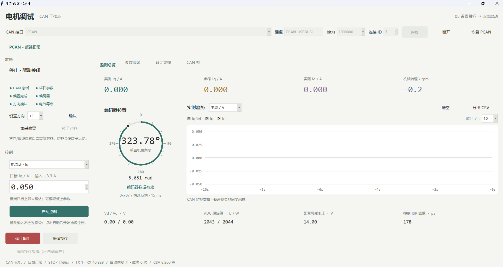
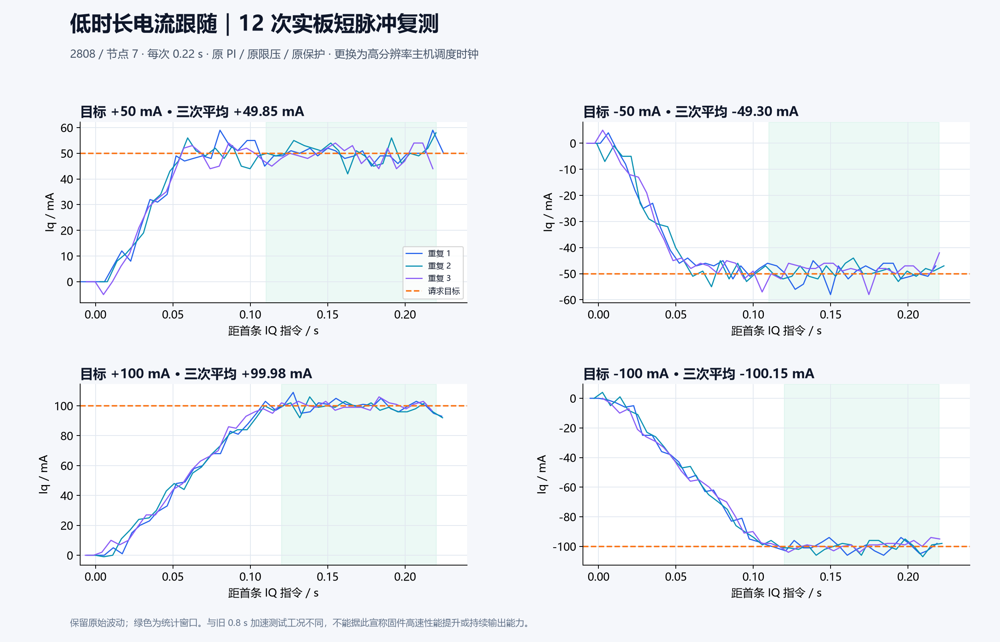
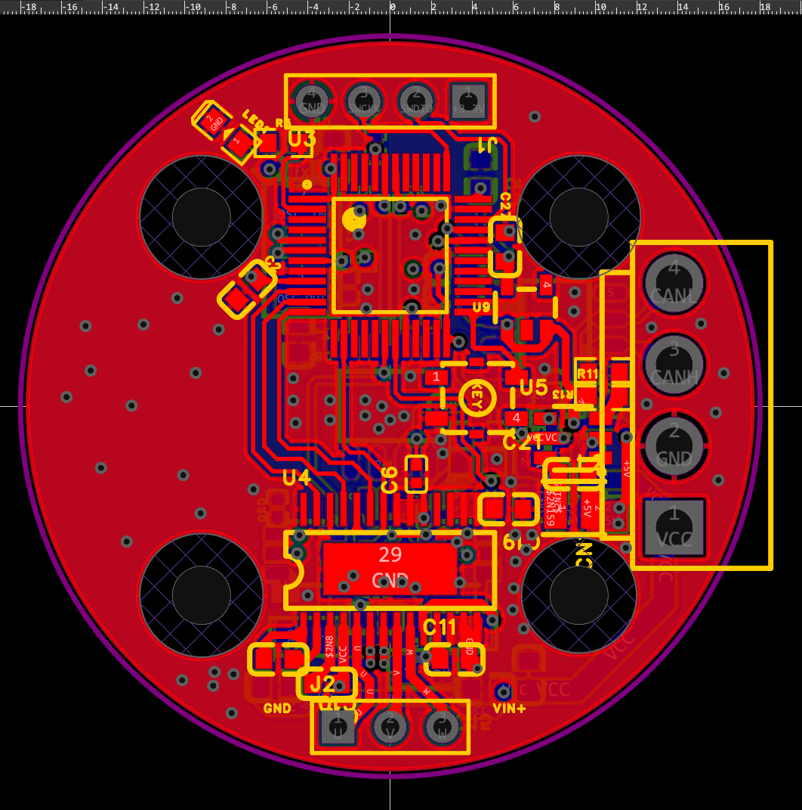

PROJECT / HARDWARE & MOTOR CONTROL
VectorDrive 2808矢驱 · 电机控制工程
让电流，成为可控的力量。
从四层 PCB 到电流闭环，再到中文 CAN 上位机。
195.4 Hz
快速机械反馈实测
2.76 ms
CAN 请求 RTT 中位数
±100 mA
12 次短脉冲测试中的目标档位
10.2–10.5 ms
时钟修复后指令间隔中位数
2026-11-02 实板记录：短脉冲每次 0.22 s，±100 mA 平均反馈 +99.98 / −100.15 mA。上述通信指标来自单板测试；存在累计 TX 丢弃标志。高速限压、持续带载与温升仍待验证，速度外环未完成实板整定。查看完整测试条件与原始证据 ↗


